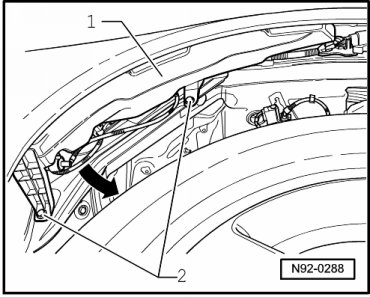
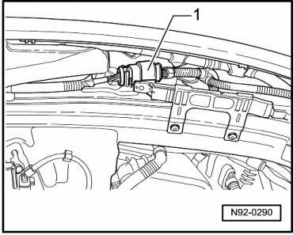
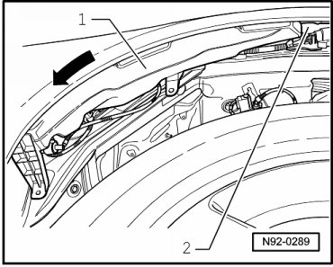
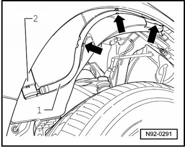
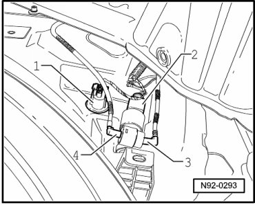

Windshield and Headlamp Washer Fluid Reservoir
Windshield and Headlamp Washer Fluid Reservoir
• In order to prevent interchanging washer fluid line connections at Windshield and Rear Window Washer Pump (V59), connections at pump and hose lines are color-coded. Hose connector pieces must be connected to the corresponding colored pump connections during installation.
Removing
- Switch off ignition, switch off all electrical consumers and remove ignition key.
- Remove front right wheel housing liner.
- Remove mounting bolts - 2 - for tank - 1 - in wheel housing.

- Disconnect electrical multi-pin harness connector - 1 - of Windshield and Rear Window Washer Pump (V59).

- Remove windshield and headlamp washer system reservoir - 1 - back - arrow - from filler tube - 2 -.

- Place tank - 1 - on front tire.
- Unclip hose - 1 - from tank - arrows - and disconnect it from Headlamp Washer Pump (V11) - 2 -.

- Drain windshield and headlamp washer system reservoir and collect fluid.
- Disconnect multi-pin harness connector at Headlamp Washer Pump (V11) - 2 -.
- Disconnect multi-pin harness connectors at Windshield Washer Fluid Level Sensor (G33) - 1 - and at Windshield and Rear Window Washer Pump (V59) - 2 -.

- Release and disconnect angle connecting pieces - 3 - and - 4 - from Windshield and Rear Window Washer Pump (V59) - 2 -.
- Remove windshield and headlamp washer system reservoir from wheel housing.
Installing
Install in reverse order of removal, noting the following:
- Angled connecting pieces - 3 - and - 4 - are color-coded and must be allocated to the corresponding color connections of Windshield and Rear Window Washer Pump (V59) when installing.
- Bleed headlamp washer system after completing assembly work --> [ Headlamp Washer System, Bleeding ] Headlamp Washer System, Bleeding.